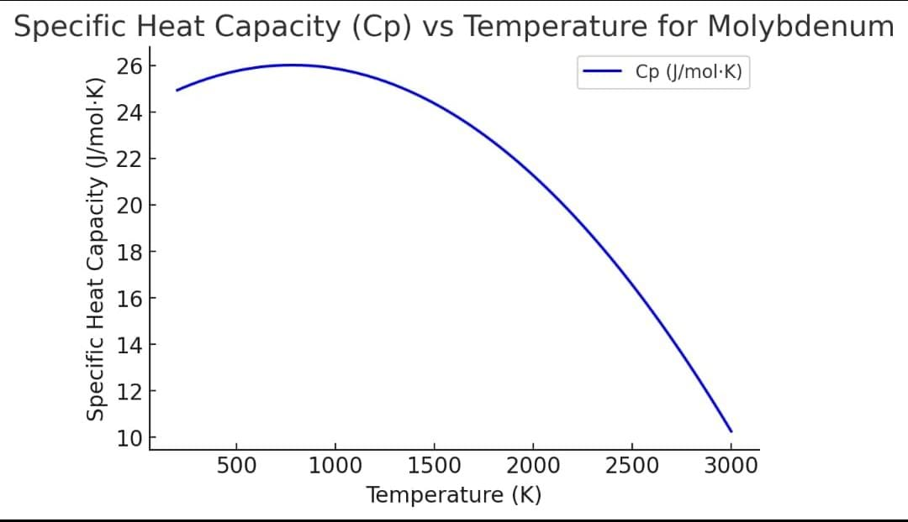
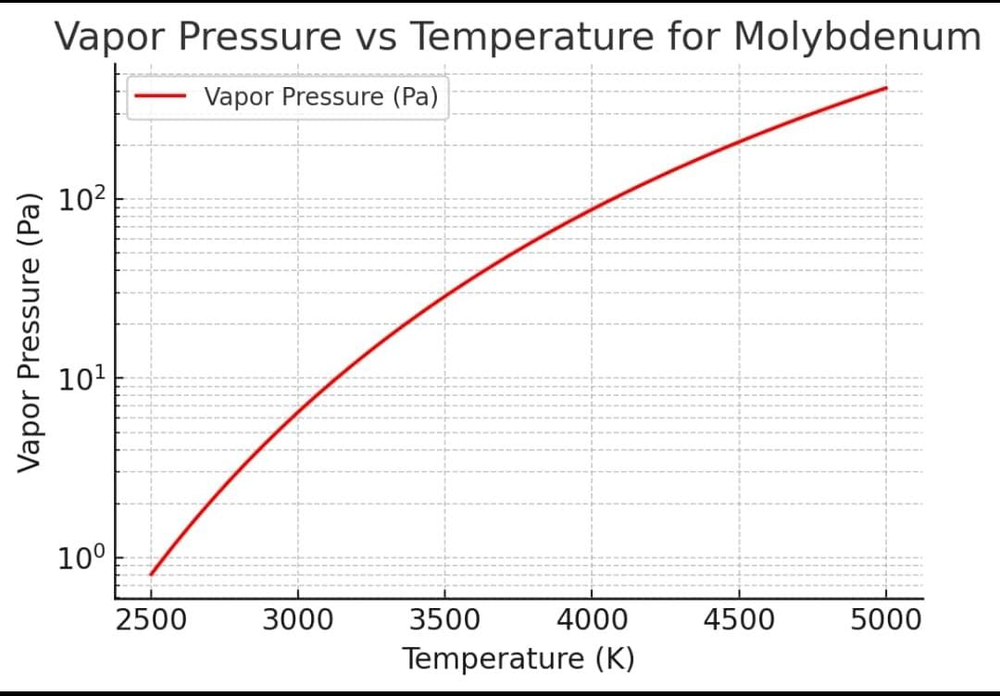
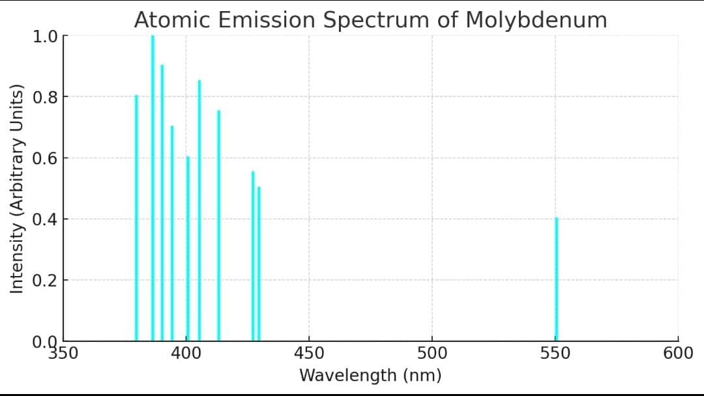
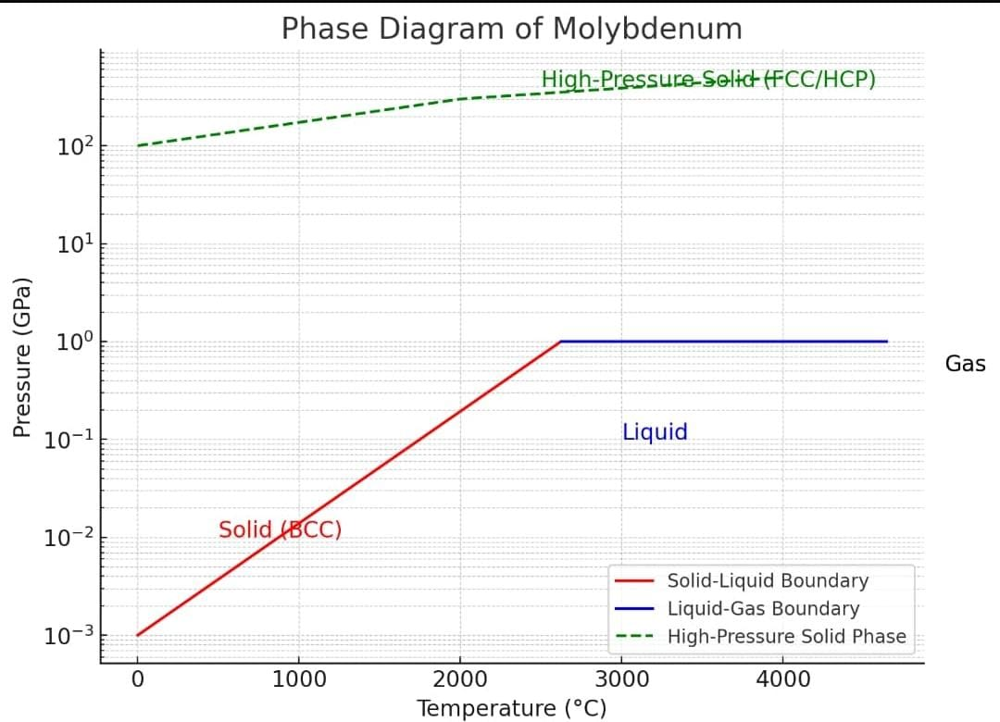
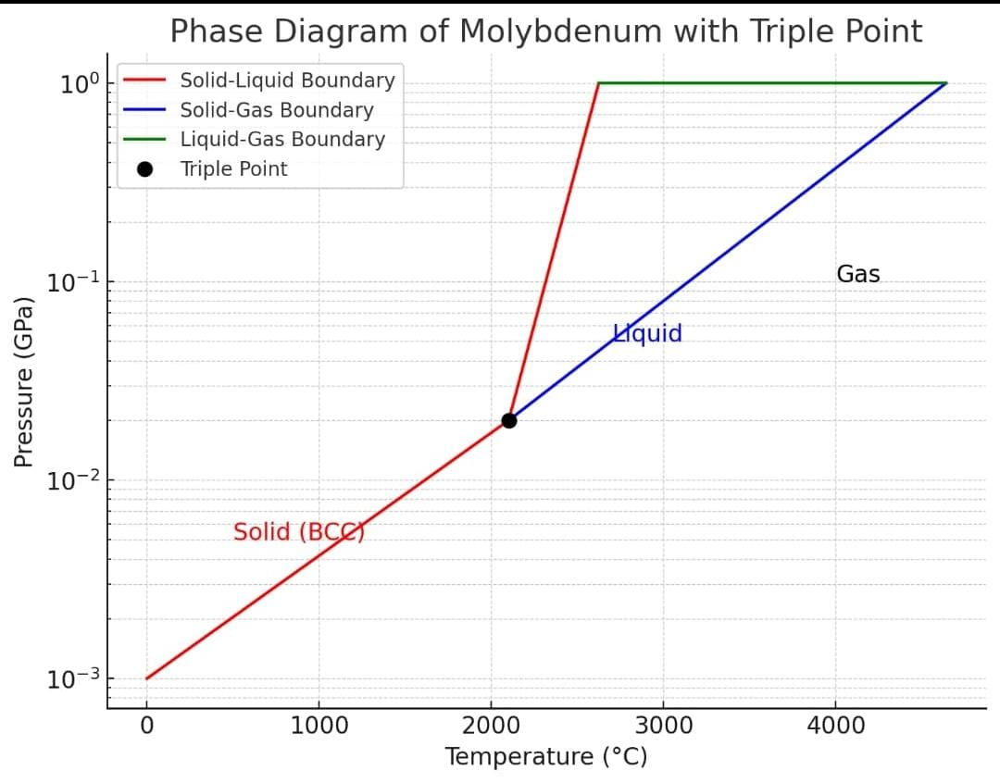
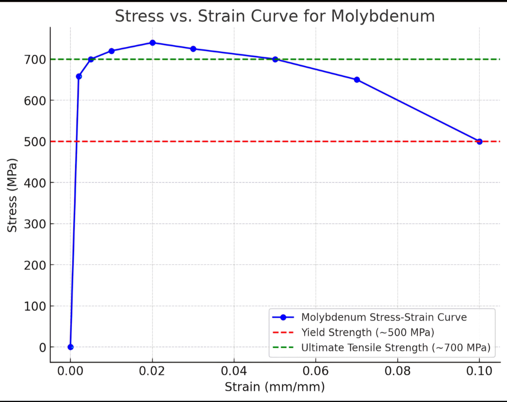
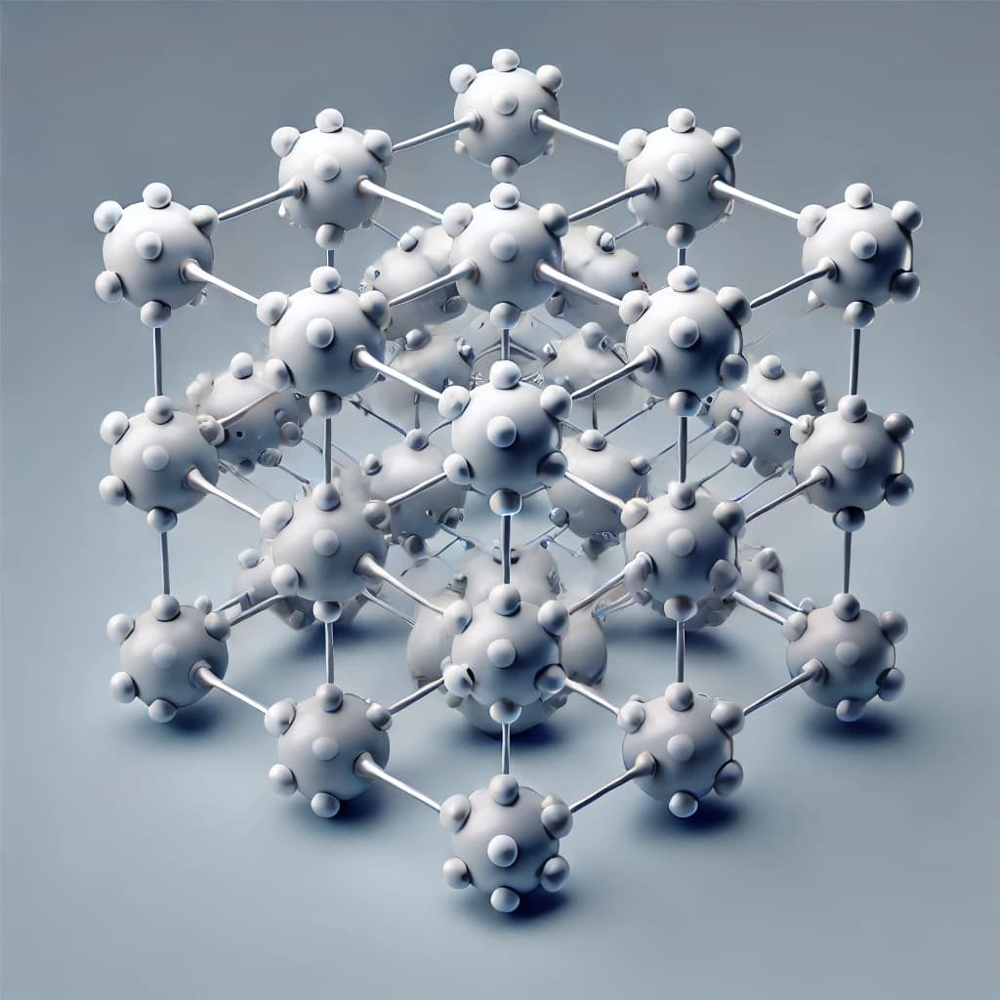
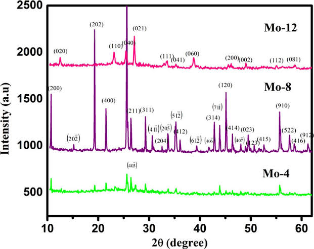

1. Thermodynamic Properties (Cp): High specific heat capacity, stable under extreme thermal conditions.

2. Vapour Pressure: Extremely low under standard conditions, ensuring minimal material loss.

3. Atomic Emission Spectrum: Displays distinct spectral lines for precise elemental identification.

4. Phase Diagram: Highlights molybdenum's solid state at extreme temperatures.

5. Stress vs Strain Curve: Demonstrates high yield strength and robust mechanical behavior.

6. Atomic Packing: Body-centered cubic (BCC) structure contributing to high strength.

7. XRD Radiation: Confirms BCC lattice arrangement, useful for structural assessment.

8. Additional Data: Extra analysis supporting molybdenum’s material properties.